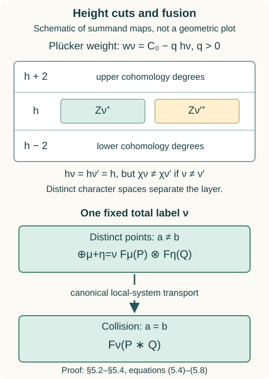

The fibre functor and the Tannakian group
Written by GPT-6.1 Sol (OpenAI), October 2026. Public domain (CC0).
Global cohomology turns convolution of perverse sheaves into a tensor product of vector spaces. The sign-adjusted fusion symmetry makes this an ordinary symmetric fibre functor. We first establish that conclusion without any semisimplicity assumption, and distinguish reconstruction from the additional geometric arguments needed to identify the group.
We work in the classical sheaf setting: \(G\) is a connected complex reductive group, and \(\Lambda\) is any characteristic-zero field. The category \(\operatorname{Sat}_G(\Lambda)\) consists of finite-support \(L^+G\)-equivariant perverse sheaves on \(\operatorname{Gr}_G\), with the conventions of Lesson 6. Put \(L=X_*(T)\), \(d_\lambda=\langle2\rho,\lambda\rangle\), and \[ F_\nu(P)=H_c^{\langle2\rho,\nu\rangle}(S_\nu,P),\qquad H(P)=\bigoplus_i H^i(\operatorname{Gr}_G,P). \tag{1.1} \] All these spaces are finite dimensional. Ordinary cohomology retains its grading during the constructions, and is then regarded as an ungraded vector space for the fibre functor.
1. Exactness and faithfulness without semisimplicity
Lesson 5, Theorem 17.1 and §18 proves a canonical natural decomposition \[ H(P)=\bigoplus_{\nu\in L}F_\nu(P), \qquad F_\nu(P)\text{ has degree }\langle2\rho,\nu\rangle. \tag{1.2} \] It constructs the maps through two localization triangles with a two-degree gap; a degeneration assertion alone would not give this decomposition. Each summand is exact, and only finitely many are nonzero on a fixed support. Thus \(H\) is exact.
For faithfulness we reproduce the detection argument of Lesson 6, §6. The simple objects are \(IC_\lambda\), by its Theorem 3.2. For \(\nu=w_0\lambda\), the semi-infinite dimension calculation gives \(\dim(S_\nu\cap Z_\lambda)=\langle\rho,\lambda+w_0\lambda\rangle=0\). The intersection contains \(t^\nu\) in the open orbit. Its reduced finite set has no other point: a regular dominant cocharacter contracts every point in it to \(t^\nu\), and a connected multiplicative-group orbit in a finite set is constant. The IC restricts there to \(\Lambda[d_\lambda]\). Consequently \[ F_{w_0\lambda}(IC_\lambda)=\Lambda, \qquad H^{-d_\lambda}(IC_\lambda)=\Lambda. \tag{1.3} \] For the second equality, any nonzero \(F_\eta(IC_\lambda)\) has \(S_\eta\cap Z_\lambda\ne\varnothing\). Cocharacter contraction puts \(t^\eta\) in that closed support, so the orbit-closure theorem of Lesson 4 gives \(\eta^+\le\lambda\). The minimum of \(\langle2\rho,\eta\rangle\) among such coweights is \(-d_\lambda\), attained only at \(w_0\lambda\): taking the antidominant member of a Weyl orbit minimizes the pairing, and every nonzero sum of positive simple coroots increases \(\langle2\rho,-\rangle\) strictly. Thus no other summand of (1.2) occurs in that degree.
Every nonzero object has a simple subobject, by finite length. Exactness therefore injects a nonzero space (1.3) into its cohomology. For a nonzero morphism \(f\), its image is a nonzero object; exactness identifies \(H(\operatorname{im}f)\) with the image of \(H(f)\). Hence \(H(f)\ne0\). This proves faithfulness on morphisms, rather than just nonvanishing on objects. No IC stalk-parity or semisimplicity assertion was used.
2. The strong symmetric tensor structure
Lesson 7, §9 constructs natural isomorphisms \[ \theta_{P,Q}:H(P*Q)\xrightarrow{\sim}H(P)\otimes_\Lambda H(Q). \tag{2.1} \] Here is why this is a strong tensor structure. The bounded two-point moving chain is proper over \(\mathbb A^2\). Its descended coefficient complex has locally constant proper direct-image cohomology on the whole base, including the diagonal. Off that diagonal it is the product of the two bounded supports with \(P\boxtimes Q\); on it the fibre is the twisted convolution source. Proper composition compares its diagonal cohomology with that of \(P*Q\). Canonical parallel transport on the contractible base and field Künneth give (2.1). Larger supports and frame levels restrict the same maps, so this is independent of their choices.
The three-point family makes both iterated comparisons the transport of one threefold Künneth map. It proves compatibility with the convolution associator. The unit family gives \(H(\mathbf1)=\Lambda\) and the unit compatibilities. The rigidity maps and both duality triangles are proved in Lesson 7, §8.
For an object in component \(\kappa\), its cohomology has the one parity \[ \epsilon(\kappa)=\langle2\rho,\lambda\rangle\pmod2 \] for any orbit index \(\lambda\) in that component. This is well defined because coroot differences pair evenly with \(2\rho\). The fusion interchange acts through the graded Koszul rule on cohomology. Lesson 8, §7 defines \[ c'_{P,Q}=(-1)^{\epsilon(P)\epsilon(Q)}c_{P,Q} \tag{2.2} \] on the component pieces and proves its coherent symmetric constraints. Every degree of \(P\) has parity \(\epsilon(P)\), and every degree of \(Q\) has parity \(\epsilon(Q)\). Thus the scalar in (2.2) cancels the Koszul sign on each tensor summand. Under (2.1), \(H(c'_{P,Q})\) is the ordinary interchange of ungraded vector spaces.
Theorem 2.1. The functor \(H\), equipped with (2.1), is an exact faithful \(\Lambda\)-linear strong symmetric monoidal functor \[ (\operatorname{Sat}_G(\Lambda),*,c') \longrightarrow\operatorname{Vect}^{\mathrm{fd}}_\Lambda. \] In particular it is a neutral fibre functor. The proof uses the ordinary cohomology parity of components, not a general parity theorem for IC stalks.
3. Reconstruction on all coefficient algebras
The Satake category is an essentially small \(\Lambda\)-linear abelian category. It is rigid by Lesson 7, and \(\operatorname{End}(\mathbf1)=\Lambda\), since the unit is the one-point constant sheaf. Theorem 2.1 therefore satisfies every hypothesis of Lesson 9, §§1–5. Its proved reconstruction gives an affine group scheme \(\widetilde G\) over \(\Lambda\), a symmetric tensor equivalence \[ \operatorname{Sat}_G(\Lambda) \simeq\operatorname{Rep}^{\mathrm{fd}}_\Lambda(\widetilde G), \tag{3.1} \] and, for every commutative \(\Lambda\)-algebra \(R\), \[ \widetilde G(R)=\operatorname{Aut}^{\otimes}(R\otimes_\Lambda H). \tag{3.2} \] This includes nilpotent test algebras. The coordinate functions are the coefficient classes \([\xi,v]_P\), their product is the coefficient of \(P*Q\), and duality gives their antipode. Thus (3.1) is a scheme-theoretic reconstruction.
An affine reconstructed group is not automatically an algebraic or reductive group. The additional tests are precise: a tensor generator makes it finite type by Lesson 9, Theorem 6.1; for a connected group in characteristic zero, semisimplicity makes it pro-reductive by its Theorem 10.1. Finite type is needed to replace that last conclusion by reductivity of an algebraic group. These hypotheses must be proved separately in the geometric category.
4. The torus case in full
Let \(G=T\) be a complex torus, with coweight lattice \(L\). Its reduced Grassmannian is the discrete set \(L\), as proved in Lesson 2. The full functor has nilpotent directions, but the classical constructible category has the same underlying topological space; those directions introduce no new classical perverse objects. Positive loop equivariance is unique, since the relevant jet groups are connected. Thus an object is a finitely supported family \((V_\ell)_{\ell\in L}\) of finite-dimensional vector spaces, each in perverse degree zero.
Convolution adds the lattice labels, by Lesson 8, §8: \[ (V*W)_\nu=\bigoplus_{\ell+m=\nu}V_\ell\otimes W_m. \tag{4.1} \] Here \(\rho=0\), so the modified symmetry is ordinary interchange. The cohomology fibre functor is \(\bigoplus_\ell V_\ell\). Formula (4.1) is a tensor grading, not merely a decomposition of the dimensions.
For any test algebra \(R\), naturality makes a tensor automorphism scalar \(a_\ell\in R^\times\) on grade \(\ell\). The conditions are \(a_0=1\) and \(a_{\ell+m}=a_\ell a_m\). Thus \[ \operatorname{Aut}^{\otimes}(R\otimes H) =\operatorname{Hom}_{\mathrm{groups}}(L,R^\times) =\operatorname{Hom}_{\Lambda\text{-alg}}(\Lambda[L],R). \] The recovered group is the dual torus \[ \widehat T=\operatorname{Spec}\Lambda[L],\qquad X^*(\widehat T)=L. \tag{4.2} \] The coaction on \(v\in V_\ell\) is \(v\mapsto v\otimes e^\ell\). Expanding any finite comodule into the group-algebra basis gives mutually orthogonal grade projectors by the same coassociativity calculation as Lesson 9, §9.1. This proves the whole equivalence \(\operatorname{Sat}_T=\operatorname{Rep}(\widehat T)\), including morphisms, tensor products and every test algebra.
5. Canonical weight summands through fusion
The ordinary graded tensor comparison does not on its own prove that it preserves the finer coweight decomposition (1.2). We construct its actual weight summands in the moving family.
First let \(P,Q\) have supports in single components. Use the proper two-point chain of Lessons 7–8 over \(B=\mathbb A^2\), with endpoint map \(m\) and coefficient complex \(\mathcal A\). Put \[ K=Rm_*\mathcal A=\mathcal F_2[-2]. \tag{5.1} \] Its fibre on the diagonal is \(P*Q\), and off it is \(P\boxtimes Q\). The shift removes the base normalization of the perverse fusion complex.
5.1. A projective family and its precise weights
Choose a faithful representation \(V\) of \(G\), with weights \(\beta\) of multiplicities \(m_\beta\). The bounded-target construction of Lesson 8, §1, embeds the moving target locally closed in a finite lattice Grassmannian. The closed reduced proper image of the moving chain in that Grassmannian is a projective \(T\)-stable family \(Z\to B\), containing the support of \(K\). This uses the proper supported image, without requiring the entire moving Grassmannian to be projective.
For \(f=(t-a)(t-b)\), the finite ambient module \(f^{-N}V[t]/f^NV[t]\) is free over \(B\), by the polynomial basis of the monic \(f^{2N}\). On our component-homogeneous support the rank of \(M/f^NV[t]\) is constant: the determinant character pairs only with the component class. Its Plücker embedding is therefore \(Z\hookrightarrow\mathbb P(W\otimes\mathcal O_B)\) for one constant finite-dimensional \(T\)-representation \(W\).
Define the rational linear map \[ b_V(\nu)=\sum_\beta m_\beta\langle\beta,\nu\rangle\beta. \] At a fixed modification with total coweight \(\nu\), the Plücker character is \[ \chi_\nu=C_N-b_V(\nu),\qquad C_N=2N\sum_\beta m_\beta\beta. \tag{5.2} \] Indeed the \(\beta\)-part of \(M/f^NV[t]\) has rank \(m_\beta(2N-\langle\beta,\nu\rangle)\). Off the diagonal \(\nu=\mu+\eta\); at the collision the powers of \(t-a\) add, giving exactly the same formula.
Faithfulness makes the weights span \(X^*(T)_\mathbb Q\). Hence \(\langle b_V(\nu),\nu\rangle=\sum_\beta m_\beta\langle\beta,\nu\rangle^2\) is positive definite, so \(b_V\) is injective. It is Weyl invariant. Reflection in a simple root shows \(b_V(\alpha^\vee)=c_\alpha\alpha\): the reflection's negative eigenspace is the line spanned by \(\alpha\). Positivity gives \(c_\alpha>0\). Choose a positive integer \(q\) clearing denominators so that \[ \zeta=q\,b_V^{-1}(2\rho)\in X_*(T). \] It is regular dominant, since \(c_\alpha\langle\alpha,\zeta\rangle=q\langle2\rho,\alpha^\vee\rangle>0\). For a torus the conclusion is already §4. The \(\zeta\)-weight of (5.2) is \[ w_\nu=C_0-qh_\nu,\qquad C_0=\langle C_N,\zeta\rangle,\quad h_\nu=\langle2\rho,\nu\rangle. \tag{5.3} \] The contraction proof of Lesson 5, §11, applies to any regular dominant cocharacter. Its fibrewise attractors are the semi-infinite orbits, or their products off the diagonal.
5.2. Closed height cuts and equal-height labels
Decompose \(W\) into \(\zeta\)-weight spaces and define the closed cut \[ Z_{\le h}=Z\cap\mathbb P\left( \bigoplus_{w\ge C_0-qh}W_w\otimes\mathcal O_B\right). \tag{5.4} \] The attracting limit is the lowest occupied projective weight. Thus a fibre of (5.4) is exactly the union of attracting pieces of total height at most \(h\). Set \(U_{\ge h}=Z\setminus Z_{<h}\) and \(Z_h=Z_{\le h}\setminus Z_{<h}\).
On \(Z_h\), projection to the lowest-weight coordinates is the relative attracting-limit map. Its image lies in the finite union of the full \(T\)-character spaces \(\mathbb P(W_{\chi_\nu})\) with \(h_\nu=h\). Regularity ensures that its fixed modifications are \(T\)-fixed; their reduced analytic loci have the coweight description of Lesson 5. Distinct total coweights have distinct characters by injectivity of \(b_V\). These character projective spaces are disjoint. Pulling them back gives an open-and-closed decomposition \[ Z_h=\coprod_{h_\nu=h} Z_\nu^+. \tag{5.5} \] Different pairs \((\mu,\eta)\) can meet when the points collide and \(\mu+\eta=\nu\); they cannot meet a different total label, even if its height agrees. This separates the summands that the ordinary cohomological degree alone cannot separate. No identification of nilpotent fixed-point functors with discrete coweights is being made; these are the classical analytic loci supporting the sheaves.
5.3. Two localization maps give the canonical comparison
Write \(\pi:Z\to B\) and \[ \mathscr W_\nu=R(\pi|_{Z_\nu^+})_!(K|_{Z_\nu^+}). \] The arbitrary proper-support base-change proof in Constructible complexes, H.2–H.4 identifies each fibre with compact cohomology. Lesson 5's concentration theorem and compact-support Künneth give \[ \mathcal H^k(\mathscr W_\nu)=0\quad(k\ne h_\nu). \tag{5.6} \] At a distinct pair its surviving fibre is \(\bigoplus_{\mu+\eta=\nu}F_\mu(P)\otimes F_\eta(Q)\); at a collision it is \(F_\nu(P*Q)\).
All the heights have one parity on these component-homogeneous supports. A finite closed-open induction using (5.6) makes the upper union \(U_{>h}\) have no relative compact cohomology in degrees \(h,h+1\), and the lower union \(Z_{<h}\) have none in \(h-1,h\). These are sheaf vanishings because they hold on every fibre by base change. The two localization triangles consequently make both maps isomorphisms: \[ \begin{aligned} \mathcal H^hR(\pi|_{U_{\ge h}})_!K &\xrightarrow{\sim}\bigoplus_{h_\nu=h}\mathcal H^h\mathscr W_\nu,\\ \mathcal H^hR(\pi|_{U_{\ge h}})_!K &\xrightarrow{\sim}R^h\pi_*K. \end{aligned} \tag{5.7} \] Properness of \(\pi\) identifies its ordinary and compact direct images. Invert the first map and compose with the second. This gives actual canonical summand maps in \(R^h\pi_*K\), rather than choosing a split of an associated-graded filtration.
The proper-family proof of Lesson 7, §9, makes \(R^h\pi_*K\) a local system on all \(B\). Each summand of (5.7) is therefore a local system: its projector is an idempotent endomorphism of a locally constant finite-dimensional sheaf. Transport on the contractible \(B\) preserves these summands. Its diagonal-to-distinct comparison is \[ F_\nu(P*Q)\xrightarrow{\sim} \bigoplus_{\mu+\eta=\nu}F_\mu(P)\otimes F_\eta(Q). \tag{5.8} \]

The schematic records the maps in (5.4)–(5.8). Equal-height total labels remain separate because their full Plücker characters differ. Within one total label, the off-diagonal tensor sum and the diagonal convolution weight are fibres of the same local-system summand. The two-degree gaps above and below the layer make its localization maps invertible. The SVG preserves these labels and equations; it is a diagram of the comparison, not a plot of the varieties.
5.4. Agreement, associativity and symmetry
At a distinct fibre, (5.7) agrees with the product of the canonical injections in Lesson 5, §18. To verify this, take the product of its two individual upper opens. It lies in the upper open for the sum height. Its intersection with the sum-height layer is the product of their individual height layers. Künneth commutes with restriction and extension by zero in this diagram; both inverted restrictions are isomorphisms. The injection of a \((\mu,\eta)\)-piece is therefore exactly the tensor product of the two earlier injections. Thus (5.8) is the restriction of the chosen map (2.1).
Repeat over \(\mathbb A^3\), replacing \(2N\) by \(3N\) in (5.2). On partial diagonals concentration follows from perverse convolution and Lesson 8, equation (3.7). Both binary comparisons transport the same total-coweight summands of the three-point local system; hence they respect the associator. The zero-modification family gives the unit. Permutation preserves the cuts and total labels. Its Koszul sign \((-1)^{h_\mu h_\eta}\) is cancelled by the component sign (2.2), so the comparison respects ordinary interchange in \(L\)-graded vector spaces.
Finite direct sums over components give arbitrary \(P,Q\). Larger bounds restrict the same intrinsic attracting loci and localization maps. Different faithful representations produce the same height and total-coweight loci. Thus no such choice changes the comparison. This proves (6.1), with all its tensor and symmetric coherence, without semisimplicity.
6. From the tensor grading to a closed dual torus
Section 5 proves that the canonical tensor comparison respects (1.2), in the precise form \[ F_\nu(P*Q)\simeq\bigoplus_{\mu+\eta=\nu}F_\mu(P)\otimes F_\eta(Q). \tag{6.1} \] Thus the grading gives a symmetric tensor functor to \(L\)-graded vector spaces. Their grading automorphisms, computed in §4, act on the fibre functor; hence they give a homomorphism \[ \iota:\widehat T=\operatorname{Spec}\Lambda[L] \longrightarrow\widetilde G. \tag{6.2} \] On a test algebra \(R\), a character \(a:L\to R^\times\) acts by the scalar \(a(\nu)\) on \(R\otimes F_\nu(P)\). Equation (6.1) proves tensor compatibility and the unit condition, so (3.2) makes this a group-scheme morphism.
Proposition 6.1. Under (6.1), the morphism (6.2) is a closed immersion, with \(X^*(\widehat T)=L\).
Proof. For every antidominant \(\eta\), put \(\lambda=w_0\eta\). Equation (1.3) supplies \(F_\eta(IC_\lambda)=\Lambda\). Choose a nonzero vector \(v\) in this weight space and a linear functional \(\xi\) on \(H(IC_\lambda)\) taking value 1 on \(v\) and zero on its other weight pieces. Pullback of the reconstructed coefficient \([\xi,v]_{IC_\lambda}\) is exactly \(e^\eta\in\Lambda[L]\), by the test-algebra formula above. Thus every antidominant monomial belongs to the image of \[ \iota^*: \Lambda[\widetilde G]\longrightarrow\Lambda[L]. \] The antidominant cone generates \(L\) as a group. Indeed choose an integral regular antidominant coweight \(\delta\) in the coroot lattice, for example minus the sum of positive coroots. For any \(\nu\in L\), both \(M\delta\) and \(\nu+M\delta\) are antidominant for sufficiently large \(M\). Their difference is \(\nu\). For a torus all coweights are already antidominant and the same conclusion holds without choosing \(\delta\). The image of a Hopf map is closed under its antipode, so it contains inverse monomials as well as products. It therefore contains every \(e^\nu\), which proves surjectivity of \(\iota^*\). This is precisely the closed-immersion criterion for affine schemes, over all test algebras. The group-algebra grading calculation gives its character lattice. \(\square\)
This proof needs no assertion that every possible Weyl-extremal IC weight has already been computed. The antidominant calculation and the group structure suffice.
7. Connectedness and geometric maximality
7.1. Finite quotients are trivial
Theorem 7.1. The affine group \(\widetilde G\) of (3.1) is geometrically connected. This does not require semisimplicity of the Satake category.
Proof. Let \(\widetilde G\twoheadrightarrow Q\) be a faithfully flat finite quotient. The Cartier theorem, AG-GS-02, Theorem 4.3 makes \(Q\) finite étale. Its representations are semisimple even over a coefficient field that is not algebraically closed. Indeed choose a finite separable splitting field \(E/\Lambda\), so that \(Q_E\) is a finite constant group. Average a linear section of any representation surjection over that finite group, dividing by its order in characteristic zero. The equations saying that a map is a section and a comodule morphism are finitely many linear equations over \(\Lambda\). Row reduction shows that a system solvable over \(E\) is already solvable over \(\Lambda\). Thus the section exists over \(\Lambda\).
By Lesson 9, Theorem 8.1, inflation is fully faithful and its image is closed under subobjects and subquotients. Each simple \(Q\)-representation therefore becomes a simple Satake object \(IC_\lambda\). If \(\lambda\ne0\), Lesson 7, §§5–6 gives a composition factor \(IC_{n\lambda}\) of \(IC_\lambda^{*n}\) for every \(n\ge1\). Induction uses exactness of convolution and its multiplicity-one highest constituent. These are distinct simples because the coweight lattice is torsion-free. They all belong to the inflated \(Q\)-category.
A finite group scheme has only finitely many simple representations. Its finite-dimensional regular comodule is an additive generator by Lesson 9, Theorem 6.2; in the semisimple category every simple must be a constituent of that one finite object. The infinite family above is impossible. Thus every simple of \(Q\) inflates to \(IC_0=\mathbf1\). Full faithfulness identifies it with the trivial representation, so semisimplicity makes the regular comodule trivial. For \(b\in\Lambda[Q]\), this says \(\Delta(b)=b\otimes1\). Applying \(\epsilon\otimes1\) gives \(b=\epsilon(b)1\). Hence \(Q=1\).
Write \(\Lambda[\widetilde G]=\bigcup_i B_i\) as in Lesson 9, Lemma 7.1. The maps \(\widetilde G\to G_i=\operatorname{Spec}B_i\) are faithfully flat. The component quotient theorem, AG-GS-03, Theorem 3.1 gives a faithfully flat finite étale quotient \(G_i\to\pi_0(G_i)\), with geometrically connected fibres. Its composite with \(\widetilde G\to G_i\) must be trivial, so every \(G_i\) is geometrically connected. After any field extension \(K/\Lambda\), an idempotent in \(\Lambda[\widetilde G]\otimes K=\bigcup_i(B_i\otimes K)\) occurs in one stage. It is therefore 0 or 1. The affine scheme is geometrically connected. \(\square\)
7.2. Simple representations remain simple after coefficient extension
For \(X=IC_\lambda\), every subobject of a finite sum of copies of \(X\) is a sum of copies of \(X\), and \(\operatorname{End}(X)=\Lambda\), by Lesson 6, Theorem 3.2. This elementary semisimple-object assertion concerns only that finite sum: a maximal sum of simple subobjects disjoint from a given subobject is its complement, by finite length. It assumes no semisimplicity of other objects.
Consequently its subobjects are \(X\otimes U\), for subspaces \(U\subset\Lambda^n\). In the finite-algebra construction of Lesson 9, every linear endomorphism of \(H(X)\) preserves \(H(X)\otimes U\). Thus \(A_X=\operatorname{End}_\Lambda(H(X))\). Its dual matrix coalgebra embeds in \(\Lambda[\widetilde G]\), and after any field extension remains the dual of a full matrix algebra. Its standard comodule is irreducible, since matrix units carry any nonzero vector to every basis vector. Hence \(IC_\lambda\)'s reconstructed representation is absolutely simple.
Conversely every simple representation over \(\overline\Lambda\) descends to a finite extension \(E/\Lambda\): include the finitely many algebraic coefficients of its coaction matrix in that extension. Restriction of scalars gives a finite representation over \(\Lambda\). Its composition factors are the \(IC_\lambda\). After extension to \(\overline\Lambda\) they remain simple, by the preceding paragraph. Since \(E/\Lambda\) is separable, restriction followed by extension is the direct sum over its embeddings, and includes the original simple as a summand. That simple is therefore one of the \(IC_{\lambda,\overline\Lambda}\). This proves that these are exactly the geometric simples, including their unique labels.
7.3. No larger torus contains the weight torus
Theorem 7.2. The closed torus (6.2) is geometrically maximal in \(\widetilde G\). No finite-type or Satake semisimplicity assumption is needed.
Proof. Work over \(\overline\Lambda\). Let \(S\subset\widetilde G\) be a closed torus containing \(\widehat T\). Lift finite coordinate generators of \(S\) to \(\overline\Lambda[\widetilde G]\), and include them in a finitely generated Hopf subalgebra. Then \(S\) embeds in a finite-type quotient \(G_i\). This quotient is smooth by Cartier's theorem and connected by Theorem 7.1.
Choose a faithful finite representation \(V\) of \(G_i\), using the coefficient-generator construction of Lesson 9, Theorem 6.1. Let \(R\) be the schematic image of its action on the direct sum \(W\) of the composition factors of \(V\). The kernel acts unitriangularly on a composition-series basis of \(V\). Its intersection with \(S\) is trivial: it is both diagonalizable and a subgroup of a unitriangular group, and AG-RG-01, Lemma 2.A proves that such a subgroup is trivial, on all test algebras. Thus \(S\to R\) is a monomorphism and a closed immersion by AG-GS-03, Theorem 5.9.
The group \(R\) is connected, smooth and reductive. Its quotient map from \(G_i\) is faithfully flat by the Hopf-inclusion lemma. Each summand of \(W\) is a simple \(R\)-module, and \(W\) is faithful. Every smooth connected normal unipotent subgroup of \(R\) has a nonzero fixed vector in each summand by the same Lemma 2.A. Normality makes the fixed subspace \(R\)-stable, so it is the whole simple summand. Faithfulness forces that subgroup to be trivial, which is reductivity.
Take a maximal torus \(T_R\supset S\), whose existence is proved in AG-RG-01, §2. The cocharacter \(\gamma=-2\rho\) of \(\widehat T\) has a one-dimensional largest weight space on every simple representation: §1 proves it is \(F_{w_0\lambda}(IC_\lambda)\), of weight \(w_0\lambda\). Choose positive roots of \(R\) so that \(\gamma\) lies in their closed dominant chamber. It lies in the interior. Otherwise a simple root \(a\) has \(\langle a,\gamma\rangle=0\); choose a strictly dominant integral highest weight \(\kappa\). The corresponding irreducible representation has nonzero vectors \(v_\kappa\) and \(f_a v_\kappa\), of distinct \(T_R\)-weights but the same largest \(\gamma\)-weight. This contradicts that one-dimensional space. The ordinary highest-weight modules and their rank-one lowering strings are proved in AG-RG-S06, §7 and integrated to the algebraic group in AG-RG-05, §6 and Theorem 10.1; their use is independent of Satake semisimplicity.
Now the largest \(\gamma\)-line of the simple \(R\)-module of highest weight \(\kappa\) has \(\widehat T\)-weight \(\kappa|_{\widehat T}\). Two dominant weights with the same restriction would inflate to geometric simples with the same \(IC_\lambda\) label, by §7.2 and their largest-weight line. Full faithfulness of inflation makes the two \(R\)-modules isomorphic, so their highest weights coincide.
If a nonzero character \(\chi\) lay in the kernel of \(X^*(T_R)\to X^*(\widehat T)\), choose a sufficiently large strictly dominant integral \(\kappa\) so that both \(\kappa\) and \(\kappa+\chi\) are dominant. They have the same restriction, a contradiction. For a torus \(R\), all characters are dominant and the argument uses \(0,\chi\). Thus restriction is injective. It is also surjective because \(\widehat T\) is a closed subtorus. Hence \(T_R=\widehat T\), and \(S=\widehat T\). This proves geometric maximality. \(\square\)
8. Two computed cohomology representations
8.1. The standard minuscule object for \(GL_n\)
For \(\lambda=(1,0,\ldots,0)\), the Schubert variety is \(\mathbb P^{n-1}\), and its IC is \(\Lambda_{\mathbb P^{n-1}}[n-1]\). The standard coordinate Schubert cells for the chosen upper-triangular Borel have dimensions \(n-i\), indexed by \(\nu=e_i\), \(1\le i\le n\). They are exactly the semi-infinite intersections on this minuscule variety, by its lattice description in Lesson 4. Compact cohomology of \(\mathbb A^{n-i}\) with the normalized shift is one dimensional in degree \[ 2(n-i)-(n-1)=n+1-2i=\langle2\rho,e_i\rangle. \] Thus \[ F_{e_i}(IC_\lambda)=\Lambda\quad(1\le i\le n), \qquad F_\nu(IC_\lambda)=0\text{ for other }\nu. \tag{8.1} \] The total dimension is \(n\). Under (6.2), its torus characters are the standard coordinate characters. This determines its restriction to the dual torus; identifying the whole reconstructed group with \(GL_n\) requires the dual-group identification.
8.2. The first nontrivial \(SL_2\) object
For \(SL_2\), take \(\lambda=\alpha^\vee\), so \(d_\lambda=2\). The projective Schubert surface is the quadratic-cone surface of Lesson 6, §§7.2–7.4. The characteristic-zero link calculation there proves \(IC_\lambda=\Lambda_{Z_\lambda}[2]\). Its three semi-infinite intersections are \(\mathbb A^2\), \(\mathbb A^1\), and a point, indexed by \(\alpha^\vee,0,-\alpha^\vee\), respectively. The middle affine line includes the vertex; on the open orbit alone its intersection is punctured, which would give a different compact-cohomology answer.
Consequently \[ F_{\alpha^\vee}(IC_\lambda)=F_0(IC_\lambda) =F_{-\alpha^\vee}(IC_\lambda)=\Lambda, \tag{8.2} \] in degrees \(2,0,-2\). All other weights vanish. Total cohomology has dimension three, and its dual-torus weights form the three-term rank-one string. The full-support normalization and the contribution at the vertex are essential to the middle weight.
9. A finite reductive quotient and the remaining kernel
The simple IC objects determine a connected reductive algebraic quotient even before semisimplicity of the whole perverse heart is known. This also proves semisimplicity of their convolution products. Arbitrary extensions require a further argument.
9.1. Finitely many generators carry every simple
The monoid \(L^+\) of dominant coweights is finitely generated. Here is a direct lattice proof. Its lineality lattice \(L_0\), killed by all simple roots, is saturated; choose a basis \(z_j\). Choose dominant integral \(v_i\) whose simple-root pairings are positive on root \(i\) and zero on the others, by clearing denominators of fundamental coweights in \(L_\mathbb Q/L_{0,\mathbb Q}\). The \(v_i,z_j\) form a real basis. A dominant lattice point has nonnegative \(v_i\)-coordinates. Subtract their integer parts and the integer parts of its \(z_j\)-coordinates. Its remainder is a lattice point of a bounded fundamental parallelepiped, hence belongs to a finite set; all such remainders are dominant. The \(v_i\), these remainders, and both signs of the \(z_j\) generate \(L^+\) as a monoid.
Choose these generators \(\lambda_1,\ldots,\lambda_s\), and put \(X=\bigoplus_i IC_{\lambda_i}\). Lesson 7's highest-constituent theorem makes every \(IC_\lambda\) a subquotient of a convolution word in \(X\). Explicitly, write \(\lambda=\sum_i n_i\lambda_i\); repeated application of that theorem supplies \(IC_\lambda\) as a constituent of the corresponding word. Exactness of convolution preserves the required subquotients.
Put \(A=\mathcal O(\widetilde G)\). The matrix coefficients of \(H(X)\), together with the inverse determinant, generate a finitely generated Hopf subalgebra \(A_R\subset A\). The matrix coproduct, counit and inverse-matrix formulas prove that it is a Hopf subalgebra. Thus \[ q:\widetilde G\longrightarrow R=\operatorname{Spec}A_R, \qquad R\hookrightarrow GL(H(X)) \tag{9.1} \] are respectively faithfully flat and a closed immersion: these are the Hopf-inclusion and coefficient-generation proofs of Lesson 9, §§6–8. In particular \(H(X)\) is a faithful \(R\)-representation. Geometric connectedness follows from §7.1, since \(R\) is a finite-type quotient. The proved characteristic-zero Cartier theorem, used there, makes it smooth.
Each summand \(H(IC_{\lambda_i})\) is absolutely simple as an \(R\)-module. Indeed inflation is fully faithful and its image is closed under subobjects, by Lesson 9, Theorem 8.1; §7.2 proves absolute simplicity for the original \(\widetilde G\)-modules. Work over an algebraic closure and let \(U\) be a smooth connected normal unipotent subgroup of \(R\). Triangularization puts \(U\) in a unitriangular group. The fully proved AG-RG-01, Lemma 2.A then gives a nonzero \(U\)-fixed vector in each simple summand. Normality makes the fixed subspace \(R\)-stable, so it is the whole summand. Faithfulness of \(H(X)\) forces \(U=1\). This is the defining reductivity criterion for a smooth connected affine group. Hence \(R\) is geometrically reductive, and is a connected reductive algebraic group over \(\Lambda\).
Every convolution word in \(X\) is inflated from \(R\). Inflation is closed under subquotients, so every \(IC_\lambda\) is inflated from \(R\), without a semisimplicity assumption. Conversely every simple \(R\)-representation inflates to a simple \(\widetilde G\)-representation, hence to an \(IC_\lambda\). We have proved:
Theorem 9.1. There is a faithfully flat finite-type connected reductive quotient \(q:\widetilde G\to R\) through which every simple IC representation factors. Its simple representations are exactly the \(H(IC_\lambda)\).
This quotient is independent of the chosen dominant-monoid generators. Its coordinate algebra is exactly the Hopf subalgebra of \(A\) generated by the coefficients of all simple ICs: all those coefficients lie in \(A_R\), while the chosen generators themselves are among the ICs. This gives both inclusions of Hopf subalgebras.
9.2. The maximal torus and semisimple IC products
The composite \(\widehat T\to\widetilde G\to R\) is a closed immersion. To check the coordinate surjection, repeat §6 using the coefficients of simple ICs, which now lie in \(A_R\). Every antidominant \(\eta\) occurs as the one-dimensional weight \(F_\eta(IC_{w_0\eta})\), so its coefficient restricts to \(e^\eta\). Those coweights and their negatives generate \(L\), giving every Laurent monomial in \(\Lambda[L]\).
It is a geometrically maximal torus of \(R\). The proof in §7.3 applies directly to \(R\): all its simples have the one-dimensional largest \(\gamma=-2\rho\) line of (1.3). If a maximal torus containing \(\widehat T\) had a root vanishing on \(\gamma\), a strictly dominant ordinary highest-weight representation would have two distinct vectors of largest \(\gamma\)-weight, as proved there. Thus \(\gamma\) is regular. Restriction of dominant highest weights to \(\widehat T\) is injective because it determines the inflated IC label. Adding a sufficiently large dominant weight then proves injectivity on the full character lattice. The closed subtorus gives surjectivity, so the containing maximal torus equals \(\widehat T\). This proves maximality for the quotient itself; it does not infer it merely from maximality in \(\widetilde G\).
The finite-type direction of Lesson 9, Theorem 10.1 proves complete reducibility of every finite-dimensional \(R\)-representation over the given characteristic-zero field. Its Lie-algebra input is the actual Casimir and invariant-projection proof of AG-RG-S06, Theorem 4.2. To specify the group bridge, over an algebraic closure use the central isogeny from a central torus times the semisimple derived group proved in AG-RG-05, §10. Decompose an inclusion of modules into central-torus weight spaces. Weyl's theorem supplies a Lie-equivariant projection on each space; AG-GS-01, Lemma 5.21 makes its kernel and image stable under the connected derived group. The projections are therefore equivariant for both factors, and faithful flatness of their central isogeny detects \(R\)-equivariance. Finally the equations for an equivariant projection with specified restriction are finitely many linear coaction equations over \(\Lambda\). Consistency after field extension implies consistency over \(\Lambda\), by row reduction. This proves complete reducibility over the original field, independently of Satake semisimplicity.
In particular \(H(IC_\lambda)\otimes H(IC_\mu)\) is a semisimple \(R\)-module. Reconstruction (3.1) and full faithfulness of inflation identify its decomposition with an actual decomposition \[ IC_\lambda*IC_\mu \simeq\bigoplus_\nu IC_\nu^{\oplus m_{\lambda\mu}^{\nu}}, \qquad m_{\lambda\mu}^{\nu}\in\mathbb Z_{\ge0}, \tag{9.2} \] with finite support. Thus the full subcategory \(\mathcal S_G\) consisting of finite direct sums of ICs is closed under convolution, duals, subobjects and quotients, and \[ \mathcal S_G\simeq\operatorname{Rep}^{\mathrm{fd}}_\Lambda(R) \tag{9.3} \] is a symmetric tensor equivalence. This is an unconditional semisimple tensor subcategory. It does not assert that every perverse object is in \(\mathcal S_G\), or that an extension in the larger heart splits.
9.3. What the remaining kernel can do
Write \(A=\bigcup_i A_i\) as the filtered union of finitely generated Hopf subalgebras containing \(A_R\), and set \(G_i=\operatorname{Spec}A_i\). Lesson 9 proves all quotient and transition maps faithfully flat. The groups \(G_i\) are smooth and geometrically connected, as in §7.1. Let \[ U_i=\ker(G_i\longrightarrow R). \tag{9.4} \] Choose a faithful finite-dimensional \(G_i\)-module \(V_i\). A composition series has simple factors that inflate to simple \(\widetilde G\)-modules. Every such factor comes from \(R\), by Theorem 9.1. Consequently \(U_i\) acts trivially on each successive quotient of that series. A basis adapted to the series embeds \(U_i\), as a group scheme, in the upper unitriangular group of \(V_i\). This is a statement on every test algebra, since each trivial quotient action is a comodule identity. Cartier's theorem makes this finite-type closed kernel smooth. Thus all finite stages of \(\ker q\) are unipotent.
Faithful flatness gives the torsor identity \[ G_i\times U_i\simeq G_i\times_R G_i, \qquad (g,u)\longmapsto(g,gu). \tag{9.5} \] The map \(G_i\to R\) is faithfully flat and finitely presented: both coordinate algebras are finitely generated over a field. Each geometric fibre is nonempty and, after choosing a point, translation identifies it with the smooth group \(U_i\). The actual flat-fibre criterion of Smooth morphisms, Theorem 3.1 therefore makes this map smooth. Its infinitesimal lifting property makes its derivative at the identity surjective; the kernel is \(\operatorname{Lie}U_i\), by the dual-number calculation in AG-GS-02, §1.1. At a rational smooth point the tangent dimension equals the local dimension, by the proved Jacobian criterion and cotangent calculation in AG-CA-18, Theorem 2.1 and §3. Apply this after algebraic closure to the three groups at their identities. Smooth group components all have the identity component's dimension, since translation permutes them. The resulting exact sequence of tangent spaces therefore gives \[ \dim G_i=\dim R+\dim U_i. \tag{9.6} \] This proves the formula without assuming that the kernel vanishes or choosing a Levi section.
It follows that a bound \(\dim G_i\le\dim R\) for every such finite stage would force \(U_i=1\). Here is the last step explicitly. A zero-dimensional smooth finite-type group is finite étale. Over an algebraic closure every element of it has finite order. A unitriangular matrix of finite order in characteristic zero is the identity: on its first nonzero superdiagonal the equation \((1+N)^m=1\) reads \(mN=0\), which is impossible for nonzero \(N\). Thus this reduced finite group has only its identity point, and is the trivial group scheme; faithful field descent gives \(U_i=1\). The torsor identity then makes \(G_i\to R\) an isomorphism. Hence every \(A_i=A_R\), so \(\widetilde G=R\).
No such bound for arbitrary \(G_i\) has been established here. The common torus and the complete list of simple representations do not imply it. For example, let a connected reductive group \(R_0\) act on a nonzero vector space \(V\), and form \(R_0\ltimes V_{\mathrm{add}}\). Every simple representation factors through \(R_0\): the normal additive group fixes a nonzero vector by Lemma 2.A, and normality makes its fixed space the whole simple. Its inflated simple tensor products are semisimple. Nevertheless the representation \[ (r,u)(a,v)=(a,rv+au) \quad\text{on }\Lambda\oplus V \tag{9.7} \] has a nonsplit exact sequence \(0\to V\to\Lambda\oplus V\to\Lambda\to0\). An invariant section would send \(1\) to \((1,v_0)\); translation by \((1,u)\) changes it to \((1,v_0+u)\), excluding such a section. The displayed formula respects multiplication \((r,u)(s,w)=(rs,u+rw)\), so this is an actual algebraic representation and an explicit extension obstruction.
9.4. When the quotient is the whole group
If the Satake heart is semisimple, every object is a finite sum of ICs. Then (9.3) is the entire equivalence (3.1), so \(A=A_R\), \(q\) is an isomorphism, and \(\widetilde G\) is finite type and reductive. Conversely if \(q\) is an isomorphism, complete reducibility of \(R\) makes the whole heart semisimple. Thus the remaining issue is precisely whether the unipotent kernel acts nontrivially on extensions.
The IC parity assertion (P) of Lesson 6, §5 implies semisimplicity by its proved Proposition 5.2. Its Proposition 5.3 gives another sufficient condition, \(\Delta_\lambda=IC_\lambda\) for all \(\lambda\); the boundary-kernel formula (5.11) there identifies the corresponding extension obstruction. General parity, these standard-object equalities and the finite-stage bound above remain unproved. Theorem 9.1 and (9.2)–(9.3) require none of them. The rational-adic extension over other algebraically closed base fields also requires its own proofs of the classical sheaf inputs; it is not supplied by these complex-analytic arguments.
10. Exercises and complete solutions
Exercise 10.1 (easy). Verify the full torus equivalence \(\operatorname{Sat}_T=\operatorname{Rep}(\widehat T)\), including tensor products and the fibre functor.
Solution. A perverse sheaf on the discrete reduced Grassmannian is a finite family \(V_\ell\) of vector spaces in degree zero. Connected jet groups give its unique equivariance. Modifications add the pair of labels \((\ell,m)\), so convolution is (4.1); there is no symmetry sign because \(\rho=0\). Define the coaction by \(v\mapsto v\otimes e^\ell\) on grade \(\ell\). Conversely expand a finite \(\Lambda[L]\)-coaction in the basis \(e^\ell\). Coassociativity makes its coefficient operators mutually orthogonal idempotents, and the counit makes their sum the identity. Their images give the finite grading. Morphisms preserve these projectors, tensor products add their labels, and ordinary interchange gives the symmetry. Forgetting the grading is the total-cohomology functor. On every algebra \(R\), its tensor automorphisms are homomorphisms \(L\to R^\times\), proving the scheme as well as the category equivalence.
Exercise 10.2 (easy). Compute the dimension and all dual-torus weights of the minuscule \(GL_n\) object \(IC_{(1,0,\ldots,0)}\).
Solution. Its support is \(\mathbb P^{n-1}\) and its complex is \(\Lambda[n-1]\). The semi-infinite slice indexed by \(e_i\) is \(\mathbb A^{n-i}\). Compact cohomology has its sole group in degree \(2(n-i)-(n-1)=n+1-2i=\langle2\rho,e_i\rangle\), of dimension one. No other slice occurs: contraction of a point in such a slice would give a torus-fixed coweight in this minuscule orbit, whose coweights are precisely the \(e_i\). Total cohomology is therefore \(n\)-dimensional and restricts to \(\widehat T\) as \(\bigoplus_i\Lambda_{e_i}\), with these degrees. This is the standard weight pattern; it does not by itself identify the whole reconstructed group.
Exercise 10.3 (medium). Prove that \(\widetilde G\) is geometrically connected without assuming Satake semisimplicity.
Solution. Any finite faithfully flat quotient \(Q\) is finite étale by the proved Cartier theorem. Averaging over a finite splitting extension gives equivariant sections; descent of their finite linear equations gives sections over \(\Lambda\). Thus \(\operatorname{Rep}(Q)\) is semisimple. Fully faithful inflation, with image closed under subobjects by Lesson 9, makes its simples simple Satake objects \(IC_\lambda\). For \(\lambda\ne0\), exact convolution and its highest constituent give distinct factors \(IC_{n\lambda}\) in all tensor powers. A finite group has only finitely many simples, since its regular comodule is a finite additive generator. This forces every simple to inflate to \(IC_0\), hence be trivial. The regular comodule is then trivial, so \(\Delta b=b\otimes1\), and the counit gives \(b=\epsilon(b)1\). Thus \(Q=1\). Every finite-type quotient of \(\widetilde G\) has such a finite étale component quotient, so is geometrically connected. Any idempotent of the full coordinate algebra after field extension belongs to a finite-type Hopf stage; that connected stage forces it to be 0 or 1. This proves geometric connectedness.
Exercise 10.4 (medium). Prove that the weight grading gives a closed immersion \(\widehat T\to\widetilde G\).
Solution. Section 5 proves that the canonical tensor and symmetry maps preserve total coweights. For \(a:L\to R^\times\), scalar action by \(a(\nu)\) on each weight space is therefore a tensor automorphism of \(R\otimes H\), giving (6.2). Every antidominant \(\eta\) occurs as the one-dimensional \(F_\eta(IC_{w_0\eta})\). A vector in that line and a functional taking it to 1 give a coefficient restricting to \(e^\eta\). Antidominant coweights generate \(L\): write \(\nu=(\nu+M\delta)-M\delta\) with both terms antidominant for a sufficiently large \(M\). The image of the Hopf coordinate map contains their monomials and antipodes, hence every \(e^\nu\). It surjects onto \(\Lambda[L]\), exactly the closed-immersion condition. This includes nilpotent test algebras.
Exercise 10.5 (hard). Prove that the weight torus is geometrically maximal before finite type and reductivity of \(\widetilde G\) are known.
Solution. Extend to \(\overline\Lambda\). Section 7.2 proves that its simples are exactly the absolutely simple \(IC_\lambda\), with their original labels. Any larger closed torus \(S\) embeds in a finite-type quotient \(G_i\), by lifting its finite coordinate generators to a finite Hopf subalgebra. This quotient is smooth and connected. For a faithful representation, let \(R\) be its image on the sum of composition factors. Its kernel is unitriangular. A diagonalizable subgroup of a unitriangular group is trivial by the proved AG-RG-01 Lemma 2.A, so \(S\) embeds in \(R\). A normal unipotent subgroup of \(R\) fixes a nonzero vector in each simple summand, hence each whole summand by normality. Faithfulness makes it trivial, so \(R\) is reductive.
Take a maximal torus \(T_R\supset S\). The cocharacter \(\gamma=-2\rho\) has a one-dimensional highest space on every simple, of weight \(w_0\lambda\), by (1.3). Choose a positive system with \(\gamma\) dominant. If it vanished on a simple root, a strictly dominant highest-weight representation of \(R\) would have its highest vector and a nonzero first lowering vector in the same highest \(\gamma\)-space, a contradiction. Thus \(\gamma\) is regular. Two dominant highest weights of \(R\) with the same restriction to \(\widehat T\) inflate to the same \(IC_\lambda\); full faithfulness makes them equal. A nonzero character in the lattice kernel would be a difference of two dominant weights after adding a sufficiently large dominant weight, which is impossible. Restriction is therefore injective and is also surjective because \(\widehat T\) is a closed subtorus. Hence \(T_R=\widehat T\), forcing \(S=\widehat T\). This proves geometric maximality.
Freely accessible reading
I. Mirković and K. Vilonen, Geometric Langlands duality and representations of algebraic groups over commutative rings, free preprint, §6, Proposition 6.4, treats the tensor compatibility of weight functors. The relative cuts, their equal-height separation and their canonical maps are proved in §5 above using the exact earlier classical sheaf operations. X. Zhu, An introduction to affine Grassmannians and the geometric Satake equivalence, free survey, is complementary reading for fusion and the dual-group construction. Section 9 proves its finite reductive quotient and its semisimple IC tensor subcategory; neither citation supplies the missing vanishing of the full group's unipotent kernel.